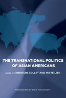

<body bgcolor="#FFFFFF" text="#000000" link="#0000FF" vlink="#CC0000" alink="#CC0000"><center><hr width="350" size="1" align="center" noshade>Asian Americans as a force for political change on both sides of the Pacific<hr width="350" size="1" align="center" noshade><p><a href="https://cdcshoppingcart.uchicago.edu/Cart/ChicagoBook.aspx?ISBN=9781592138609&&PRESS=temple" target="_top">Buy this book!</a> | <a href="https://cdcshoppingcart.uchicago.edu/Cart/Cart.aspx?PRESS=temple" target="_top">View Cart</a> | <a href="https://cdcshoppingcart.uchicago.edu/Cart/Cart.aspx?PRESS=temple" target="_top">Check Out</a></p><p></p></center><!--none//--><h1>The Transnational Politics of Asian Americans</h1>
<h3>edited by Christian Collet and Pei-te Lien, foreword by Don Nakanishi</h3>
<P>cloth 1-59213-860-8 $80.50, May 09, <FONT COLOR=#990033>Available</FONT>
<br>paper 1-59213-861-6 $33.95, May 09, <FONT COLOR=#990033>Available</FONT>
<BR> 252 pp
6x9
9&nbsp;tables 7&nbsp;figures 2&nbsp;halftones
</P><BLOCKQUOTE><I>"The range of chapters and activities examined is excellent � The book conveys the sense that there is something dynamic, complex, and compelling at work here when considering the transnational dimension of Asian American political lives."</i><BR>&#151<b>Paul Watanabe</b>,Director of the Institute for Asian American Studies and Professor of Political Science, University of Massachusetts, Boston</p></I></BLOCKQUOTE>
<p>As America�s most ethnically diverse foreign-born population, Asian
Americans can puzzle political observers. This volume�s multidisciplinary
team of contributors employ a variety of methodologies&#151
including quantitative, ethnographic, and historical&#151to illustrate how
transnational ties between the U.S. and Asia have shaped, and are increasingly
defining, Asian American politics in our multicultural society.</p><p>
Original essays by U.S.- and Asian-based scholars discuss
Cambodian, Chinese, Filipino, Indian, Japanese, Korean, and
Vietnamese communities from Boston to Honolulu. The volume also
shows how the grassroots activism of America's "newest minority"
both reflects and is instrumental in broader processes of political
change throughout the Pacific. Addressing the call for more global
approaches to racial and ethnic politics, contributors describe how
Asian immigrants strategically navigate the hurdles to domestic
incorporation and equality by turning their political sights and
energies toward Asia. These essays convincingly demonstrate that
Asian American political participation in the U.S. does not consist
simply of domestic actions with domestic ends.</p><p>
Contributors include: Eiichiro Azuma, Augusto Espiritu,
Hiroko Furuya, Peter Kiang, Ikumi Koakutsu, Michel Laguerre,
Sangay Mishra, Hiromi Monobe, Shirley Tang, Tritia Toyota,
Janelle Wong, and the editors.</p>
<BR>&nbsp;<h2>Excerpt</h2><P>Excerpt available at <a href="http://www.temple.edu/tempress">www.temple.edu/tempress</a></p>
<BR>&nbsp;<h2>Reviews</h2>
<p><i>"Bookended by two historical case studies, and filled in between with original studies on political behavior of diverse new Asian immigrant communities, </i>The Transnational Politics of Asian Americans<i> further elucidates the characteristics of Asian American political participation and activism in the U.S. This fine volume poses the question of whether transnational political behavior ultimately advances Asian incorporation into an increasingly multicultural and globalized America." </i><br>&#151<b>Evelyn Hu-DeHart</b>, Professor of History and Ethnic Studies, Director, Center for the Studies of Race and Ethnicity in America, Brown University
<P><I>"Editors Christian Collet and Pei-te Lien provide a succinct summary of the development of the concept of transnationalism and a useful overview of the debate over the concept.... The editors have done an excellent job of highlighting the widely ranging ways that transnationalism can operate.... This collection makes a valuable contribution to our understanding of the political behavior of today�s immigrants, and it suggests that there is much continuity underlying the substantial change that immigrants bring to America."</i><br><b>&#151<i>Perspective on Politics</i></b>
<P><I>"This collection of essays combines historical analyses and current accounts of transnational politics among a variety of Asian-American ethnic groups: Cambodians, Chinese, Japanese, Korean, Filipino, Indian, and Vietnamese. It is a must for any library on ethnic studies�. [M]any of the essays on specific groups are the best written and most informative, especially the excellent pieces on Japanese Americans by Eiichiro Azuma on how Japanese Americans in California in the 1910s sought aid from the Japanese government and Japanese businessmen to counter the nativist campaign in California."</i><br> <b>&#151<i>Multicultural Review</i></b>
<p><I>"</I>The Transnational Politics of Asian Americans<I> offers the reader a critical insight into the political behavior and distinctly transnational context of the Asian American electorate.... As Collet and Lien make trenchantly clear, Asian Americans often, if not always, make political choices that are affected by a fluid, constantly moving dynamic that involves up-to-the-minute geopolitical considerations (through the virtual community) and political economies of both homeland and diaspora operating�as the people themselves do�in constant flux (between Asia/Pacific and the U.S.)." </I><br>&#151<b> <I>Journal of American Ethnic History</I></b>
<p><I>"[A] valuable addition to the ways we think about political participation, identity formation, and the nation�state itself during a time of rapid transition. It is to the editors� credit that they gather a wide range of approaches and link historians and cultural studies scholars with those in the social sciences. Collet and Lien have compiled an invaluable guide to the rapidly changing politics of our contemporary moment." </I><br>&#151<b> <I>Journal of Transnational American Studies</I></b>
<BR>&nbsp;<h2>Contents</h2><P>
List of Figures and Tables
<br>Foreword
<br>Acknowledgments
<br>1. The Transnational Politics of Asian Americans: Controversies, Questions, Convergence
<p><b>PART I: Asian States and Nationalisms in Asian American Politics: Then and Now</b>
<br>2. Dancing with the Rising Sun: Strategic Alliances between Japanese Immigrants and Their �Home� Government
<br>3. Journeys of Discovery and Difference: Transnational Politics and the Union of Democratic Filipinos
<br>4. Contested Nation: Vietnam and the Emergence of Saigon Nationalism in the United States
<p><b>PART II: The Practices and Sites of Asian American Transnational Politics</b>
<br>5. Transnational Dimensions of Community Empowerment: The Victories of Chanrithy Uong and Sam Yoon
<br>6. Working Democracy: Transnational Repertoires of Citizenship among New Chinese Americans
<br>7. The Limits of Transnational Mobilization: Indian American Lobby Groups and the India�U.S. Civil Nuclear Deal
<br>8. Network Governance of Asian American Diasporic Politics
<p><b>PART III: Transnational Political Behavior and Asian American Identities</b>
<br>9. Like Latinos? Explaining the Transnational Political Behavior
of Asian Americans
<br>10. The Intersection of �Americanization� and �Racial Expansion�: Nisei Identity Politics in Prewar Hawai�i
<br>11. Does Transnational Living Preclude Pan-Ethnic Thinking? An Exploration of Asian American Identities
<br>Notes
<br>References
<br>About the Contributors
<br>Index
</P><BR>&nbsp;<H2>About the Author(s)</H2>
<table><tr><td valign="top"><img src="/tempress/authors/1980_au1.gif" height="90" width="75"></td><td width="100%" valign="middle"><p><b>Christian Collet</b> is Associate Professor of Politics and International Relations at the International Christian University, Tokyo.</P></td></tr></table><table><tr><td valign="top"><img src="/tempress/authors/1980_au2.gif" height="90" width="75"></td><td width="100%" valign="middle"><p><b>Pei-te Lien</b> is Professor of Political Science affiliated with Asian American Studies at the University of California, Santa Barbara. Her book <i><a href="1473_reg.html" target="_top">The Making of Asian America through Political Participation</a></i> (Temple) received the 2002 Best Book Award on Political Participation, Voting, Elections, and Political Behavior from APSA �s Division on Race, Ethnicity, and Politics. She is also the co-author of <i>The Politics of Asian Americans: Diversity and Community</i>.</P></td></tr></table>
<BR><H2>Subject Categories</H2>
<p><A HREF="/tempress/asian_amer.html" TARGET="_top">Asian American Studies</a>
<BR><A HREF="/tempress/asian.html" TARGET="_top">Asian Studies</a>
<BR><A HREF="/tempress/political.html" TARGET="_top">Political Science and Public Policy</a>
</p>
<BR><h2 class="inpageheading">In the series</H2>
<P><I><a href="http://www.temple.edu/tempress/asam_history.html" onMouseOver="window.status='Click for other books in this series!'; return true;" onMouseOut="window.status=''; return true;" target="_top">Asian American History and Culture</a></i>, edited by K. Scott Wong, Linda Trinh V�, and Cathy Schlund-Vials.
</p><p>Founded by Sucheng Chan in 1991, the <I>Asian American History and Culture</I>, series has sponsored innovative scholarship that has redefined, expanded, and advanced the field of Asian American studies while strengthening its links to related areas of scholarly inquiry and engaged critique. Like the field from which it emerged, the series remains rooted in the social sciences and humanities, encompassing multiple regions, formations, communities, and identities. Extending the vision of founding editor Sucheng Chan and emeriti editor Michael Omi and David Palumbo-Liu, series editors K. Scott Wong, Linda Trinh V�, and Cathy Schlund-Vials continue to develop a foundational collection that embodies a range of theoretical and methodological approaches to Asian American studies.</p>
<p align="center"><a href="https://cdcshoppingcart.uchicago.edu/Cart/ChicagoBook.aspx?ISBN=9781592138609&&PRESS=temple" target="_top">Buy this book!</a> | <a href="https://cdcshoppingcart.uchicago.edu/Cart/Cart.aspx?PRESS=temple" target="_top">View Cart</a> | <a href="https://cdcshoppingcart.uchicago.edu/Cart/Cart.aspx?PRESS=temple" target="_top">Check Out</a></p><p><font face="Arial" size="1"><a href="copyright.html" onMouseOver="window.status='Web Copyright Policy';return true;" onMouseOut="window.status=''" title="Web Copyright Policy">&copy;</a> 2015 <a href="http://www.temple.edu" target="new" onMouseOver="window.status='Link to Temple University home page';return true;" onMouseOut="window.status=''" title="Link to Temple University home page">Temple University</a>. All Rights Reserved. http://www.temple.edu/tempress/titles/1980_reg.html</font></p>